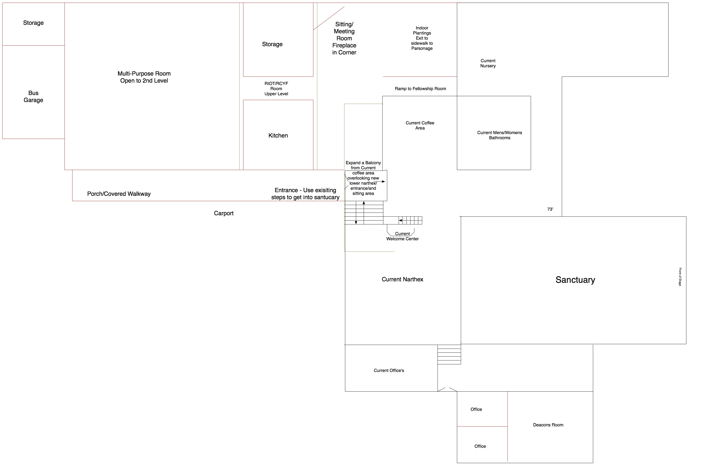

Building Design Options
With aid from information provided by the B.V.T.F. and the requested work to be done by consistory the team is presenting two separate diagrams. The team feels that the work done has addressed and identified current documented needs for the building: Storage, Meeting areas for adults and kids, building accessibility and flow, Fellowship areas and etc. It is believed that the drawings fulfilled what was requested of us by consistory. It should be noted that the drawings presented are not final design proposals but examples (or starting point) for NHRC to use as a base template.
Option A

Option A1

Option B
Things to Consider in the New Building Design
The following are points that the team felt were important topics and worth documenting. These points along with the findings from the B.V.T.F. should be considered together as next steps are considered.
- A firewall and other building fire systems will need to be installed to separate stay in code with the new addition from the sanctuary. This can be accomplished in a number of methods
- Location of electrical boxes and utilities
- Gymnasium can be a stand alone section of the building so it does not have to be constantly heated
- New appliances for the kitchen (sell old?)
- Entry for car port at Sanctuary level
- Grade for accessibility for downstairs and upstairs
- Faster and bigger elevator to reach all floors
- Wheelchair accessibility from parking lot and throughout the church
- Obvious “main” entrance that is properly marked
- Minimize confusion on flow once in the church
- Indoor Storage
- Custodial
- Outdoor Storage
- Building and Grounds
- Memorial Garden
- (Plans are already in the works for memorial walkway)
- Cremation Memorial Wall
- Cremation Memorial in Ground
- Parking Lot exit/entrance
- Centralized Offices for Staff
- Classrooms – Storage
- Classroom size
- Technology in the classrooms (currently only 2 TVs on carts)
- Sanctuary
- Size (can seat about 400 people, average number was 236, high at 277)
- What fullness level makes it uncomfortable for visitors? 80%?
- Repurpose current sanctuary space
- Roofline
- NO FLAT ROOFS
- Classrooms need server?
- Playground
- Green space
- At some point we will have to go to an architect, the more we can flesh out ideas the better the cost
- After School Programs / Extra programs
- Daycare
- Meal programs
- Boys and Girls clubs
- Ability for service to be going on without interrupting other service
- Ex: Service in gym simultaneously with sanctuary
- Build the need, don’t assume the need
- Chapel – does it remain in current form?
- Could remove (save the windows)
- No handicap access
- Current size is a challenge for multiple uses – Baby cry room?
- Gym
- Pole Barn
- Pole Barn could be less expensive for a gym
- Insulate, but don’t need much heat
- Would we use an addition enough?
- Faith Church hasn’t used addition enough to justify the expense
- Covered space
- Could use as event rental space
- recognize that damage could be done
- wear and tear, outside people do more damage
- Facilities Management
- Long Term Church Planning
- Maintaining
- Use